MB Jewels began with a love story — ours.
Years ago, before we ever dreamed of crafting fine jewelry, my husband surprised me with a small handmade ring. It was imperfect, endearing, and created with the kind of sincerity that can’t be replicated. I wore it only once (for obvious structural reasons), but I treasured the sentiment behind it. In that moment, we discovered something: creating beauty together felt natural, effortless, and deeply meaningful.
What started as a sweet gesture grew into a shared passion.
We studied craftsmanship, metals, gemstones, and the art of transforming raw materials into pieces that hold emotion, memory, and promise. Side by side, we learned to see jewelry not just as adornment, but as a language — one that speaks of love, devotion, and timeless connection.
Today, MB Jewels is the culmination of that journey.
Every design we create reflects our belief that jewelry should feel personal and enduring. We approach each piece with meticulous attention, sourcing stones ethically and shaping each detail with care, precision, and artistry. Our studio has become a place where our love for each other meets our love for the craft — a space filled with soft gold tones, shimmering gemstones, and the quiet joy of creating something meaningful for others.
The very first ring — the one that started everything — now rests in a velvet box in our workshop. It reminds us daily that love, in all its tenderness and imperfection, is the most inspiring creation of all.
At MB Jewels, we are honored to craft pieces that celebrate your own stories — milestones, promises, beginnings, and forever moments.
With warmth and gratitude,
The MB Jewels Founders
 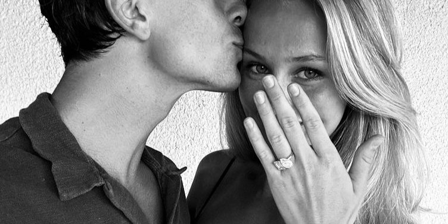
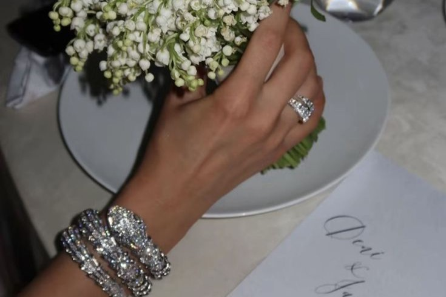
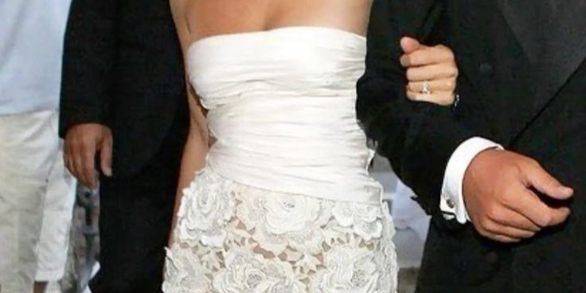
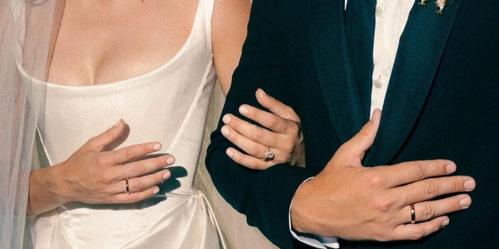
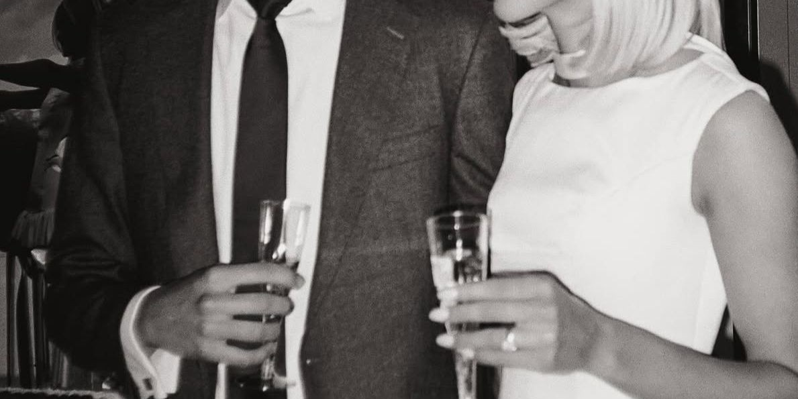
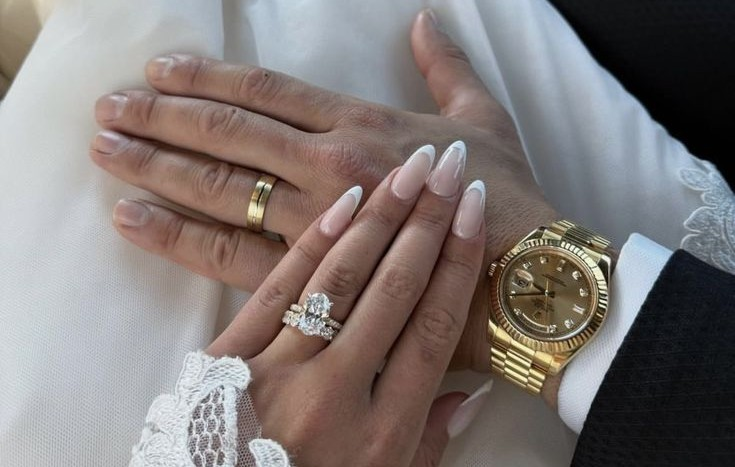
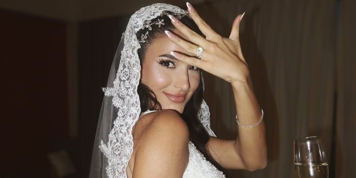
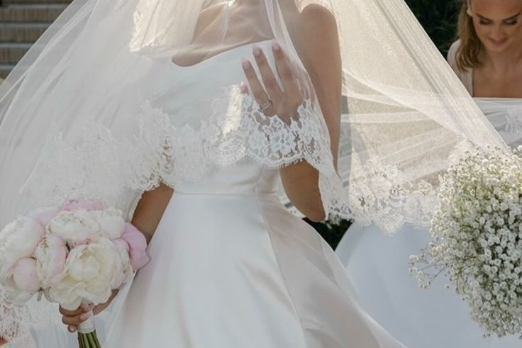
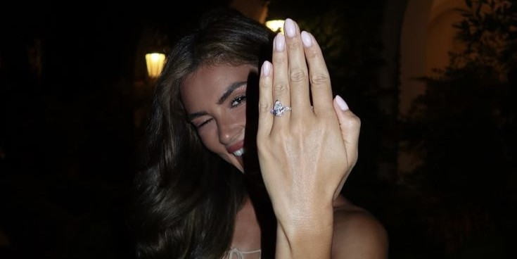
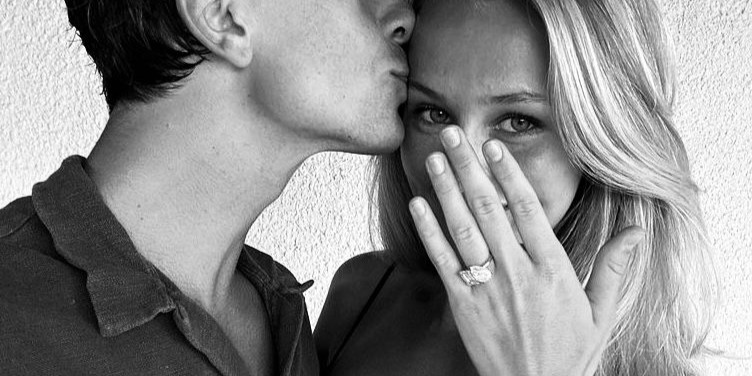
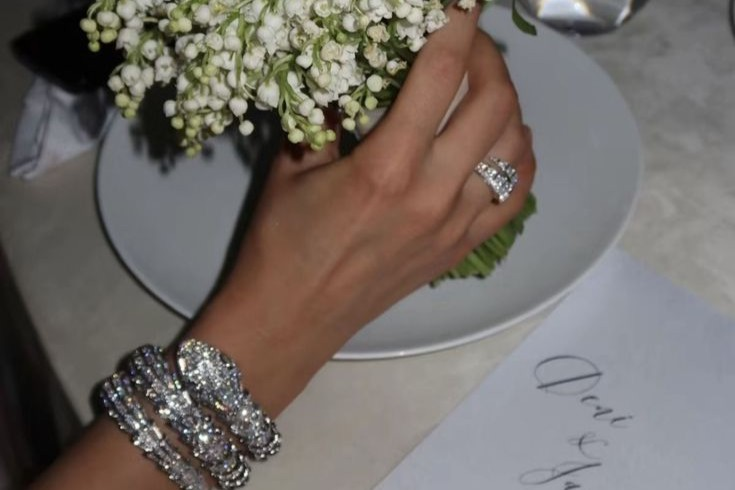
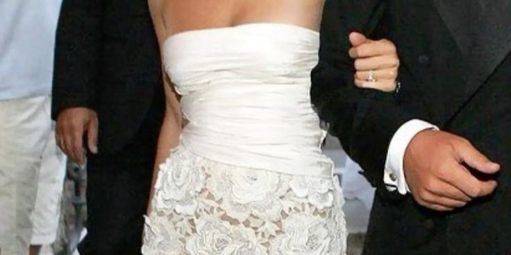
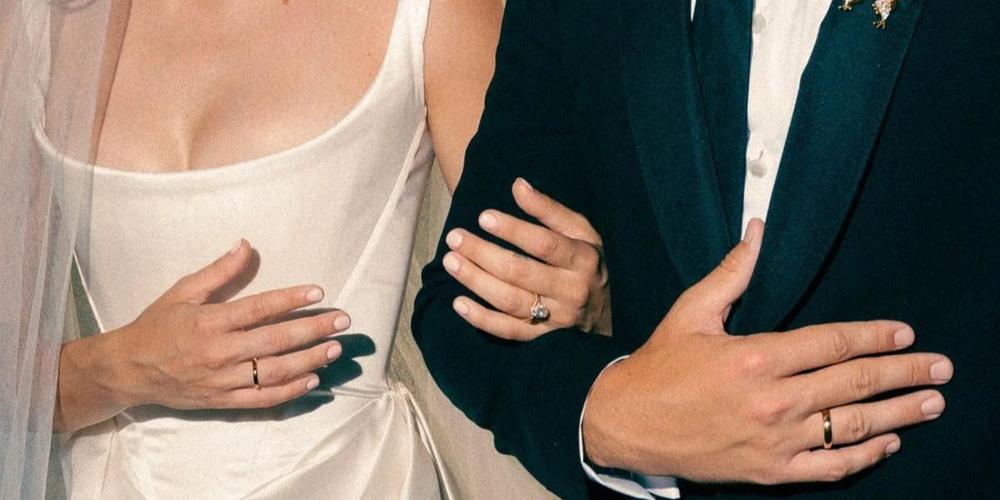
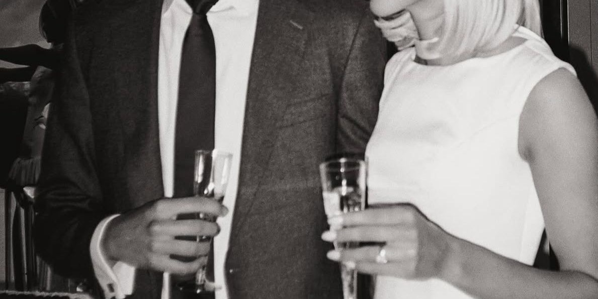
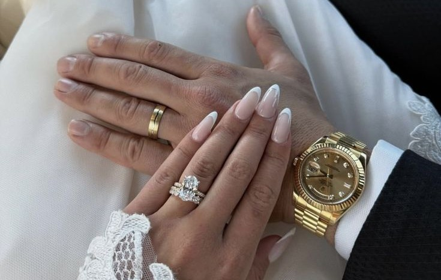
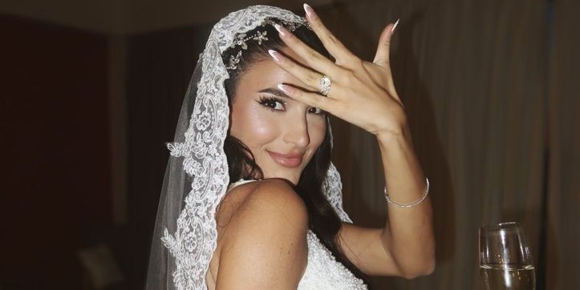
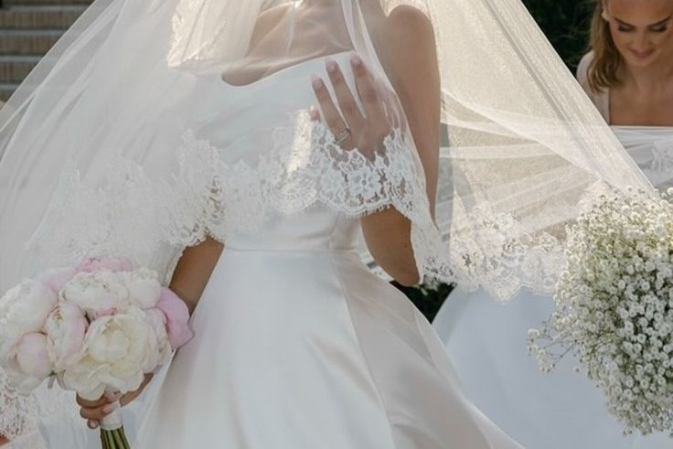
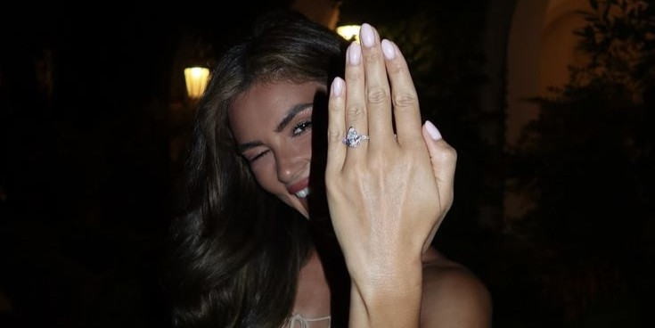